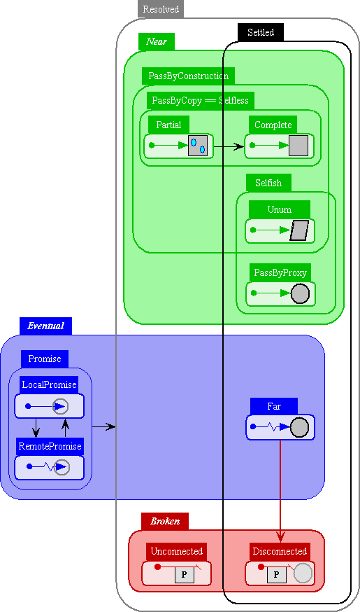

| |
Reference Sameness |
||||||
For any references x and y, "x == y" immediately (synchronously) either returns true, returns false, or throws an Exception. If x and y are both Settled, then == must return either true or false. Therefore, if it throws an Exception, then at least one of the two operands was Unsettled at the time. If the sameness formulas of x and y are the same, then x == y returns true and we say they are are designationally equivalent. If x and y are both settled (ie, their sameness formulas are ground, ie, they contain no unbound variables, ie, their sameness identity does not depend on any promises), then if their sameness formulas are the same, then they designate the same object. If the sameness formulas of two settled references are different, then they designate different objects, and x == y returns false.
The == predicate is monotonic, meaning that once it returns an answer for a pair of operands (rather than throwing an Exception), it will always return that same answer for the same pair of operands. Unsettled references don't normally provide enough information to determine what the answer will be when they're Settled, which is why == needs the option of not answering when the operands are Unsettled. As you might expect by these properties, and as you can see in the state transition diagram below, a reference can transition from being Unsettled to Settled, but once Settled always Settled.
E's built-in hashtable-based collection abstraction, EMap, requires Settled keys. If an attempt is made to use an Unsettled reference as a key, they will throw an Exception rather than accept the key.
When are two references the same?
As with the Expanded Reference Taxonomy on the Reference Mechanics page, the following diagram also illustrates the possible transitions between the states of a Live reference, but now organized for purposes of reasoning about distributed reference sameness.

Promises as Logic Variables
*** explain
PowerKeys
*** explain
******* Just stale notes below this line. Please ignore *******
Currently, a == implementation is allowed (but not required) to answer true or false when either or both x and y are Unsettled, provided it is able to prove that they can't settle in such a way as to cause == to provide a different answer at a later time, which would violate monotonicity. Although it would be expensive, at some point we will probably tighten the spec (and the reference implementation) to require == to throw an Exception unless both operands are Settled, just as hashtable do with their keys.
Wraps a possibly unsettled base reference, in order to be able to use it as key in an EMap.
This is called a PowerKey because it has a relationship to the base reference-as-key much like the relationship of a powerset to a base set.
In E, by definition, any settled reference designates a particular settled object. Also by definition, a settled object, whether Selfish or Selfless, has a particular sameness identity. Given two settled references, x and y
x == yreturns true or false according to whether x and y designate objects with the same sameness identity. Once a reference is settled, it is always settled to the same sameness identity, so answers to the above question are stable -- the same question asked at a later time will give the same answer. EMaps (hashtables) require such stability of their keys, and therefore only accept settled references as their keys.
Were all references Near, Far, or Disconnected, there would only be settled references and settled objects. The other cases occur because of the other kinds of references, and because of their interaction with Selfless objects. The remaining kinds of references are Promises (or Unresolved references) and Unconnected references.
- A Near reference is the only kind that appears in convention object languages like Smalltalk or Java: it designates a particular object in the same address space and conveys the authorty to call that object. In E terms, all referenes in these conventional languages are indeed settled.
- A Far reference is a resolved remote reference to a PassByProxy object. PassByProxy objects are necessarily Selfish, and Selfish objects are necessarily settled (see below). Therefore, Far references are settled.
- A Disconnected reference is a former Far reference after it's been broken by partition. To preserve stability of == and EMap keys, a Disconnected reference still has the sameness identity it had as a Far reference, and thereby must still be said to designate its target object, even though it no longer conveys authority to invoke that object. (Due to this behavior of Disconnected references, we say that == tests designational equivalence rather than computational equivalence.)
- Each Selfish object is endowed with a primitive unreified sameness identity by the act of creation. Two Selfish objects that are otherwise identical but were created by two separate acts of creation are not the same. By virtue of this primitive identity, Selfish objects are born settled. (In conventional object languages, all heap allocated objects are Selfless, with their identity really being their memory address.)
- In E, all objects are either Selfish or Selfless. Selfless objects have no creation identity. As in conventional object languages, the scalars (null, booleans, ints, float64s, chars) are atomically Selfish. Besides these, the identity of a Selfess object is based only on a recursive (cycle tolertant) sameness comparison of their components. The sameness identity of a Selfless object can be considered a formula (or a Herbrand term) expressed in terms of the sameness identity of these components.
- In terms of sameness formulas, each Promise (unresolved reference) is a logic variable. When a promise is resolved, even if to another promise, all occurrences of that promise are (as if) replaced by what the promise resolves to. A reference is settled or not exactly according to whether its sameness formula still contains any unresolved promises, ie, unbound logic variables.
- An Unconnected reference corresponds to a logic variable we know will never be resolved further. XXX We need to decide on the precise sameness semantics of these.
* * * * (XXX I suspect the following paragraph is stale, and that PowerKey now has better properties, like more stable sameess, as documented after this paragraph.) Used to finitely and successfully walk possibly cyclic & unsettled structures. A PowerKey wrapper always claims to be settled, though a cbx == cby that returns false now can return true later. Nevertheless, one can safely use CycleBreakers as keys in the built in hashtables (EMap, etc), since the hashCode they report to the map is stable.
This object itself has stable sameness, which is why it may be used as a key in an EMap. It's sameness is no worse that a snapshot of the sameness-possibility-set of the value it wraps, where this snapshot is made when the PowerKey is constructed. Its sameness is no better than that of the object it wraps. For example, after the sequence
def cb1 := makeCycleBreaker(p)
# ...
def cb2 := makeCycleBreaker(p)
cb1 will always be == to cb1, and cb2 will always be == cb2. If p did not
settle further during the "# ...", the cb1 will be == cb2. If it did settle
some, then they may or may not be ==.
If p3 != p4, then makeCycleBreaker(p3) != makeCycleBreaker(p4)
Unless stated otherwise, all text on this page which is either unattributed or by Mark S. Miller is hereby placed in the public domain.
| |
|
report bug (including invalid html)
|
||||||||